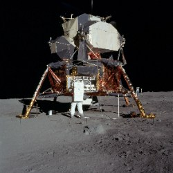
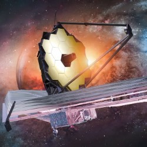

Why Space Exploration Matters
Space exploration has led to technological innovation and a deeper understanding of our universe. It inspires new generations to reach for the stars.
From moon landings to Mars rovers, each mission contributes to scientific knowledge and international collaboration.
Featured Missions
 Apollo 11 made history by landing humans on the Moon in 1969.
Curiosity continues to explore Mars, analyzing soil and searching for signs of life.
Mission Summary Table
| Mission | Launch Year | Objective |
|---|---|---|
| Apollo 11 | 1969 | First manned Moon landing |
| Curiosity Rover | 2011 | Mars surface exploration |
| JWST | 2021 | Deep space observation |